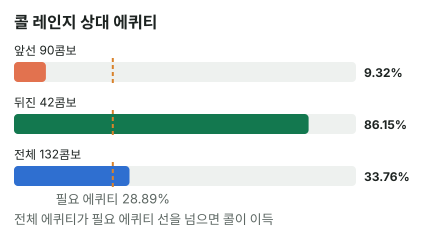

안녕하세요. A32에서는 BB가 플랍 c-bet을 어떤 핸드로 지키는지, A21에서는 BTN이 턴에 한 번 더 거는 법을 봤죠.
오늘은 그 둘이 만나는 자리예요. BB에서 플랍을 콜했는데 턴에 또 벳을 맞은 쪽이에요. 플랍에선 편하게 콜한 세컨드 페어가, 턴 벳 한 번에 얼마나 흔들리는지 숫자로 따라가 볼게요.
이 글에서 배울 것
- 턴 배럴 레인지를 앞선 핸드 / 뒤진 핸드로 나누고, 묶음별 에퀴티를 콤보 가중 평균해서 내 에퀴티를 구하는 법
- 미들 페어의 콜이 상대 레인지 속 뒤진 핸드의 비중에 거의 전부 달려 있는 이유
- 턴 카드 한 장이 상대의 블러프를 드로우로 바꿔 놓을 때 계산에서 무엇이 달라지는지
오늘의 핸드
Hero (BB · 100BB) · 상대 (BTN · 100BB)


프리플랍
상대(BTN) 2.5BB 오픈 → SB 폴드 → Hero(BB) 콜
플랍 · 팟 5.5BB


Hero 체크 → 상대 2BB → Hero 콜. Hero는 세컨드 페어(보드 두 번째로 높은 7과 페어, A 키커)예요. 이렇게 보드 가운데 카드와 맞은 페어를 흔히 미들 페어라고 불러요. K가 들어간 페어 이상에는 져요.
턴 · 팟 9.5BB


Hero 체크 → 상대 6.5BB(팟의 약 68.42%) → Hero는 콜할까?
결론부터 말하면, 오늘 가정한 상대에게는 이번 결정 기준으로 콜이 이득이에요. Hero 에퀴티 약 33.76%가 필요 에퀴티 약 28.89%를 넘어요. 다만 그 차이는 상대 레인지의 뒤진 핸드가 거의 다 만들어 줘요.
남은 베팅이 있어 실제 결과는 달라질 수 있어요. 오늘은 에퀴티 vs 필요 에퀴티로 판정하고, 에퀴티는 리버 한 장을 전부 센 값이에요.
1단계. 필요 에퀴티
필요 에퀴티 = 6.5(Hero 콜) ÷ (16(지금 팟, 상대 벳 포함) + 6.5) = 6.5 ÷ 22.5 = 약 28.89%
플랍의 작은 c-bet(팟의 약 36.36%) 때보다, 팟의 약 68.42%인 턴 벳에서는 문턱이 3분의 1 가까이로 훨씬 높아졌어요. 같은 핸드라도 넘어야 할 문턱이 높아진 거예요.
2단계. 상대 턴 배럴 레인지를 묶음으로 (가정 레인지)
상대가 두 번 거는 핸드
이 상대는 플랍·턴 두 번 연속으로 이런 핸드로 건다고 가정해요(솔버 결과 아님). 특히 K 아래 포켓 페어(QQ~88)도 두 번 건다고 봤어요. 오늘 앞선 핸드가 넉넉하게 잡힌 이유예요. 보드가 K♠ 7♦ 2♣ 4♥로 무늬 넷이 다 달라 플러시 드로우는 없고, 페어 없는 핸드는 수딧만 두 번 걸고 오프수트는 포기한다고 봤어요.
| 묶음 | 핸드 | 콤보 | Hero 에퀴티 |
|---|---|---|---|
| 셋 | KK, 44, 22 | 9 | 이기는 리버 없음 |
| K 페어 | AK, KQ, KJ, KT, K9s | 48 | 약 10.09% |
| 오버페어 | AA | 3 | 약 4.55% |
| Hero 7보다 높은 포켓 페어 | QQ, JJ, TT, 99, 88 | 30 | 약 11.36% |
| 드로우 | 65s, 53s, 86s | 12 | 약 83.33% |
| 페어 없는 핸드 | A5s, A3s, QJs, QTs, JTs, Q9s, J9s, T9s | 30 | 약 87.27% |
앞선 핸드(위 네 줄)는 90콤보, 뒤진 핸드(아래 두 줄)는 42콤보, 모두 132콤보예요.
💡 빨리 세는 팁: Hero가 A♦를 들고 있어서 AA는 3콤보, AK는 A 3장 × K 3장 = 9콤보예요(K♠는 보드에). KQ는 K 3장 × Q 4장 = 12콤보예요. KK·44·22는 보드에 한 장씩 있어 각 3콤보, A5s·A3s는 A♦가 빠져 각 3콤보예요.
77은 Hero의 7♣와 보드 7♦ 때문에 7♥7♠ 하나만 남아요. 오늘은 단순하게 하려고 뺐어요(넣어도 앞선 핸드라 결론 방향은 같아요).
가중 평균으로 내 에퀴티 만들기
묶음 에퀴티를 콤보 수만큼 무게를 줘서 평균을 내면 Hero 에퀴티가 나와요. 앞선 묶음 90콤보 상대로는 약 9.32%, 뒤진 묶음 42콤보 상대로는 약 86.15%예요.
Hero 에퀴티 = (90 × 약 9.32% + 42 × 약 86.15%) ÷ 132 = 약 33.76%

이게 무슨 뜻이냐면, A♦7♣는 "3분의 1쯤 이기는 핸드"가 아니라, 대부분 크게 지고 일부를 크게 이기는 핸드라는 거예요. 33.76%는 그 두 극단을 섞은 숫자예요.
3단계. 턴 4♥가 바꾼 것
블러프 일부가 드로우가 됐어요
플랍 K♠ 7♦ 2♣에서 65s·53s·86s는 페어도 드로우도 없는 블러프였어요. 그런데 턴 4♥가 떨어지면서 이렇게 바뀌었어요.
- 65s: 6·5에 보드 7·4라 3이나 8이 오면 스트레이트(양방)
- 53s: 5·3에 보드 4·2라 6이나 A가 오면 스트레이트(양방)
- 86s: 8·6에 보드 7·4라 5가 오면 스트레이트(거트샷), 8이 와도 Hero보다 높은 페어
페어 없는 핸드 쪽에서도 A5s·A3s는 4♥ 덕분에 각각 3·5가 오면 A-2-3-4-5 스트레이트가 되는 거트샷이 됐어요. 오늘은 표에서 이 둘을 페어 없는 핸드에 그대로 두었어요.
Hero를 넘는 리버 카드는 두 묶음 모두에 있어요. QJs·T9s 같은 핸드도 Q·J·T·9가 와서 7보다 높은 페어가 되면 이겨요. 다만 드로우 묶음은 스트레이트 카드까지 더해져 이기는 리버가 조금 더 많아서, Hero 에퀴티가 약 83.33%로 페어 없는 핸드 상대(약 87.27%)보다 조금 낮아요.
그래도 리버 한 장뿐이에요
드로우가 생겼어도 남은 카드는 리버 한 장이에요. 양방 드로우의 아웃츠 8장도 리버 한 장에서는 맞을 확률이 높지 않아서, Hero는 이 묶음을 여전히 크게 앞서요.
이게 무슨 뜻이냐면, 턴 카드는 상대 블러프 일부에 리버에 맞을 카드를 몇 장 더 줘서 Hero 에퀴티를 조금 깎았지만, 판정을 뒤집을 만큼은 아니었다는 거예요. 판정을 정하는 건 여전히 뒤진 핸드가 레인지에 몇 콤보나 있나예요.
4단계. 비교
약 33.76% > 약 28.89% → 콜이에요.
| 숫자 | |
|---|---|
| 필요 에퀴티 | 약 28.89% |
| Hero 에퀴티(132콤보 상대) | 약 33.76% |
다만 Hero는 포지션이 없고, 리버에 또 벳을 맞을 수 있어요. I31에서 본 것처럼 이런 자리는 계산된 에퀴티를 다 가져가기 어려워요. 오늘 여유는 크지 않아요.
그래서 턴 콜은 리버까지 이어지는 결정이에요. 리버에 A·7이 아닌 카드가 오고 또 벳을 맞으면, 오늘처럼 상대 레인지를 앞선 / 뒤진으로 다시 나눠요. 그때는 리버 카드로 완성된 드로우가 앞선 쪽으로 넘어가고, 못 맞은 드로우는 뒤진 쪽에 남아요.
왜 그럴까: 미들 페어는 블러프캐처에 가까워요
앞선 핸드 상대로는 거의 못 이겨요
앞선 90콤보 상대 Hero 에퀴티는 약 9.32%예요. 리버에 A나 7이 와야 겨우 이기는 정도죠. 그러니 Hero의 콜은 앞선 핸드를 이기려는 콜이 아니라, 뒤진 핸드를 잡으려는 콜이에요.
그래서 판정은 "얼마나 섞였나"로 갈려요
블러프캐처는 상대 밸류에는 지고, 상대 블러프(뒤진 핸드)만 이기는 핸드예요. 그래서 에퀴티가 약 9.32% 아니면 약 86.15%로 크게 갈라져요. 리버의 블러프캐처처럼 완전히 0 아니면 전부는 아니지만, 턴의 미들 페어도 그에 가까워요.
이런 핸드의 에퀴티는 내 카드보다 상대 레인지에 뒤진 핸드가 몇 콤보 섞였나로 거의 다 정해져요. 같은 A♦7♣라도 상대가 누구냐에 따라 콜도 되고 폴드도 되는 이유예요.
자주 하는 실수
실수 1. "플랍에서 콜했으니 턴도 콜" 플랍 결정을 그대로 끌고 가는 경우예요. 플랍의 작은 c-bet보다 오늘 턴 벳이 훨씬 커서, 필요 에퀴티가 약 28.89%로 올라갔어요. 대신 턴 벳 크기로 필요 에퀴티를 다시 구해요.
실수 2. "세컨드 페어에 A 키커면 꽤 센 핸드" 핸드 이름으로 힘을 정하는 경우예요. 오늘 앞선 90콤보 상대로는 약 9.32%밖에 안 됐어요. 대신 상대가 두 번 거는 레인지를 앞선 / 뒤진 묶음으로 나눠 평균을 내요.
실수 3. 내 카드가 지우는 콤보를 안 센다 AA·AK를 늘 6과 16으로 세는 경우예요. Hero가 A♦를 들어서 AA 3, AK 9로 줄었고, 그만큼 앞선 묶음이 가벼워졌어요. 대신 내 카드와 보드부터 지우고 세요.
"턴에 또 걸면 다 강한 핸드 아니에요?"
좋은 질문이에요. 상대에 따라 달라요. 두 번 거는 레인지에 드로우와 블러프가 얼마나 섞였는지가 답을 정해요.
오늘 상대는 132콤보 중 42콤보를 뒤진 핸드로 섞는다고 가정했어요. 실전에서는 이 비율을 그 상대의 지난 핸드(쇼다운에서 보여 준 블러프, 턴에 포기하는 빈도)로 짐작해야 해요.
숫자가 뒤집히는 지점
기준은 두 가지예요.
- Hero 에퀴티와 필요 에퀴티 약 28.89%의 차이: 레인지에서 뒤진 핸드가 빠지면 가중 평균이 내려가요
- 벳 크기: 커지면 필요 에퀴티가 올라가요. Hero 에퀴티 약 33.76%를 필요 에퀴티가 넘어서는 크기부터 폴드예요
선생님의 한마디
턴 배럴을 맞으면 이 순서예요.
- 이 상대가 턴에 포기하는 걸 본 적이 있는지 떠올려요. 두 번 거는 레인지에 뒤진 핸드가 섞였는지의 단서예요
- 턴 카드가 상대 블러프에 새 아웃츠를 줬는지 봐요
- 콜한다면 리버에 또 벳을 맞을 때 무엇을 다시 볼지 미리 정해 둬요
연습 문제
홀덤학습 에퀴티 계산기에서 내 카드·보드와 상대 핸드 하나(예: 6♥5♥)를 넣어 핸드 대 핸드로 확인하고, [콜 수익] 칸에 지금 팟(상대 벳 포함)과 콜 금액을 넣으면 필요 에퀴티가 나와요. 레인지 에퀴티는 블로그에서 직접 계산한 값이에요.
문제 1. 이번 상대는 턴에 페어 없는 핸드(A5s·A3s·QJs 등 30콤보)로는 걸지 않고, 드로우가 된 65s·53s·86s만 섞어 두 번 걸어요. 앞선 핸드는 오늘과 같아요. 2단계 표의 묶음 에퀴티로 Hero 에퀴티를 먼저 어림해 보고, 콜할지 정해 보세요.
정답 보기
레인지는 앞선 90 + 드로우 12 = 102콤보예요.
Hero 에퀴티 = (90 × 약 9.32% + 12 × 약 83.33%) ÷ 102 = 약 18.03%
약 18.03% < 약 28.89% → 폴드. 뒤진 핸드가 42에서 12로 줄자 가중 평균이 크게 내려갔어요. 오늘 콜을 받쳐 준 게 페어 없는 핸드 30콤보였다는 뜻이에요.
문제 2. 처음 레인지 그대로, 상대가 턴에 팟 크기인 9.5BB를 걸었어요(같은 레인지로 건다고 가정). 먼저 필요 에퀴티가 오늘 Hero 에퀴티 약 33.76%보다 높을지 어림해 보고, 계산으로 확인하세요.
정답 보기
필요 에퀴티 = 9.5 ÷ (19 + 9.5) = 9.5 ÷ 28.5 = 약 33.33%. Hero 에퀴티는 그대로 약 33.76% > 약 33.33% → 콜이에요.
다만 차이가 아주 작아요. 상대 레인지에서 뒤진 핸드가 몇 콤보만 빠져도 뒤집히고, 포지션이 없는 만큼 에퀴티를 다 가져가기도 어려워서 사실상 본전 근처의 콜이에요.
핵심 정리
- 턴 배럴 앞에서는 턴 벳 크기로 필요 에퀴티를 다시 구해요. 3분의 2팟이면 플랍 작은 벳보다 문턱이 훨씬 높아요
- 내 에퀴티 = 묶음 에퀴티를 콤보 수로 가중 평균한 값. 미들 페어는 앞선 핸드엔 크게 지고 뒤진 핸드엔 크게 이겨요
- 그래서 미들 페어의 콜은 상대 레인지에 뒤진 핸드가 몇 콤보 섞였나로 거의 다 정해져요
- 턴 카드가 상대 블러프를 드로우로 바꾸면 그 묶음 상대 에퀴티가 조금 깎여요. 리버가 한 장뿐이라 크게 깎이진 않아요
정리하며
오늘은 K♠ 7♦ 2♣ 4♥에서 A♦7♣가 6.5BB 턴 배럴을 맞은 장면을 봤어요. 앞선 90콤보 상대로는 약 9.32%, 뒤진 42콤보 상대로는 약 86.15%였고, 둘을 콤보 수로 섞은 약 33.76%가 필요 에퀴티 약 28.89%를 넘어 콜이었죠. 턴 4♥가 블러프 일부를 드로우로 바꿨지만, 판정을 정한 건 뒤진 핸드의 콤보 수였어요.
다음 글 A30은 상급 마무리 시험이에요. 지금까지 본 알파·MDF·콤보 세기·3벳 팟·턴 대응을 새 문제로 풀어 보며, 고급으로 올라갈 준비가 됐는지 확인해요.
AI 작성 · 숫자는 계산 검증 (콤보는 하나씩 셈, 리버 한 장은 전부 셈) · 가정 레인지 기준 (솔버 결과 아님) · 이번 한 번의 결정 기준